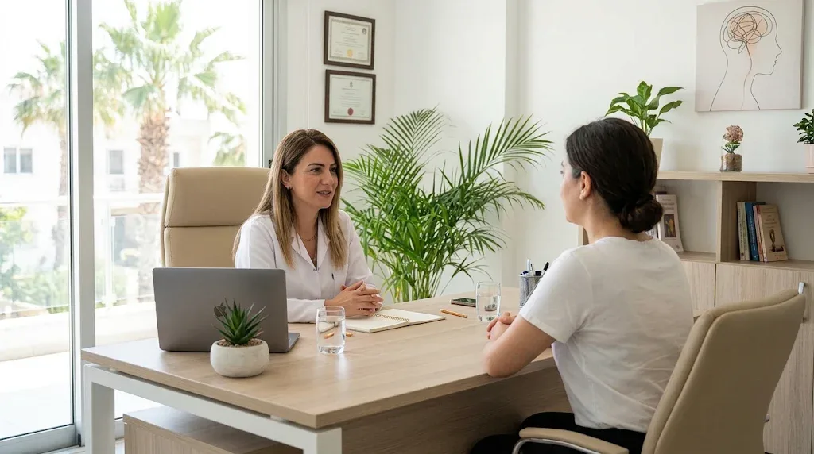

https://adavira.com/blog/girne-ve-kktc-de-klinik-dis-hekimi-ve-uzmanlar-icin-hasta-kazandiran-dijital-rehber · 2026-11-17T10:35:10+00:00
KKTC’de hastalar artık doktor veya uzman seçmeden önce Google’a bakıyor. Kliniğiniz ve muayenehaneniz için güven veren web sitesi ve yerel SEO adımlarını inceleyin.

Kuzey Kıbrıs’ta sağlık, estetik ve danışmanlık alanında hizmet veren uzmanların çalışma biçimi son yıllarda köklü bir değişim geçirdi. Eskiden sadece kulaktan kulağa tavsiye veya merkezi bir caddedeki tabela ile hasta kabul eden klinikler, diş hekimleri, diyetisyenler ve psikologlar artık çok daha bilinçli ve araştıran bir danışan kitlesiyle karşı karşıya.
Bugün Girne’de yaşayan yerel halk da, adaya sağlık veya tatil amaçlı gelen yabancı ziyaretçiler de bir uzmandan randevu almadan önce ilk iş olarak Google’a giriyor. Arama sonuçlarında karşısına çıkmayan, çıktığında ise eski görünümlü veya telefonda zor açılan bir siteyle karşılaşan danışanlar, saniyeler içinde başka bir kliniğin sayfasına geçiyor.
Sağlık ve danışmanlık hizmetlerinde satın alma kararını belirleyen en temel duygu güvendir. Danışanınız henüz kapınızdan içeri girmeden önce; uzmanlık alanlarınızı, eğitiminizi, kliniğinizin hijyenini ve atmosferini dijital vitrininizde görmek ister.
Özellikle bireysel muayenehane işleten uzmanlar için hazırlanan bir Girne psikolog ve diyetisyen web sitesi veya poliklinik sitesi şu üç temel özelliği mutlaka taşımalıdır:
Bölgesel hizmet veren her işletme gibi sağlık kuruluşları için de en hızlı hasta kaynağı yerel aramalardır. Bir kişi telefonuna "Girne diş kliniği", "Lefkoşa diyetisyen" veya "Girne çocuk psikoloğu" yazdığında Google ekranın en üstünde harita sonuçlarını gösterir.
Bu alanda rakiplerinizin önüne geçmek için düzenli bir Girne yerel SEO ve Google Haritalar optimizasyonu şarttır. İşletme profilinizin doğru kategorilerde yer alması, çalışma saatlerinizin güncel tutulması, düzenli fotoğraf eklenmesi ve memnun danışanlarınızın bıraktığı gerçek yorumlar; reklam bütçesi harcamadan bile her ay onlarca yeni randevu talebi almanızı sağlar.
Kuzey Kıbrıs; diş tedavileri, estetik uygulamalar ve tüp bebek gibi alanlarda İngiltere, Avrupa ve Orta Doğu’dan gelen hastalar için önemli bir cazibe merkezidir. Ancak yabancı hastalar sadece sosyal medya reklamlarına bakarak başka bir ülkeye uçak bileti almaz; kliniğinizin uluslararası standartlarda olduğunu kanıtlayan çok dilli bir dijital altyapı arar.
Doğru kurgulanmış bir KKTC sağlık turizmi ve klinik SEO çalışmasıyla; İngilizce ve Rusça arama yapan potansiyel hastaların karşısına doğrudan tedavi paketleriniz, hasta yorumlarınız ve tanıtım videolarınızla çıkabilirsiniz.
Bir hekimin veya uzmanın mesaisini web sitesi güncellemeleriyle, reklam panelleriyle veya sosyal medya kurgularıyla harcaması sürdürülebilir değildir. Biz AdaVira olarak; kliniğinizin ihtiyacı olan web tasarım ve yazılım altyapısından, mekanınızın güven veren atmosferini yansıtan video ve drone prodüksiyon çekimlerine, Google’da üst sıralara çıkmanızı sağlayan SEO ve yerel arama çalışmalarından ölçülebilir dijital reklam kampanyalarına kadar tüm süreci tek merkezden yönetiyoruz.
Kliniğinizin veya danışmanlık merkezinizin mevcut dijital görünürlüğünü analiz etmemizi ve size özel yol haritasını çıkarmamızı isterseniz iletişim sayfamızdan bize ulaşabilirsiniz.